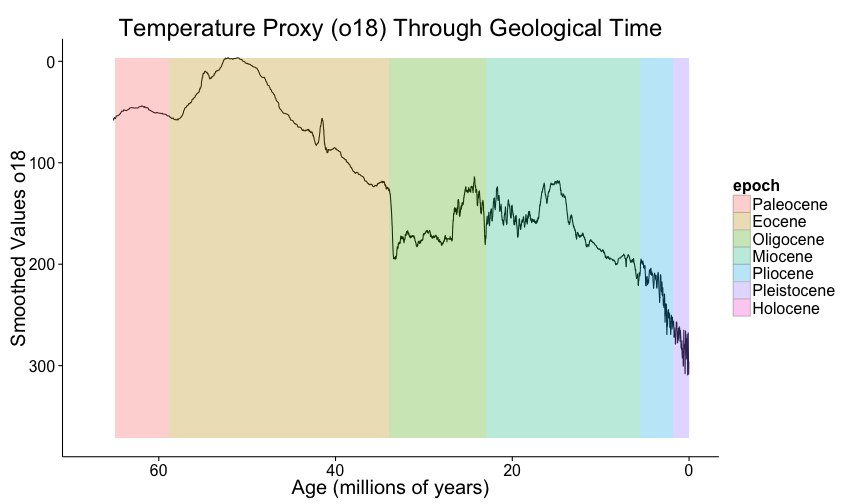

Recreate this figure using the tools in ggplot2. The data come from the Zachos et al 2001 deep sea oxygen isotope dataset. Make a line graph of the o18 values against time, and include rectangular overlays that show the geological epochs of the Cenozoic.

Use these approximate start dates for the geological epochs:
epoch = c("Paleocene", "Eocene", "Oligocene", "Miocene", "Pliocene", "Pleistocene", "Holocene")
start = c(65, 58.8, 33.9, 23.03, 5.5, 1.8, 0.01)Note: The original dataset is noisy. Use a convolution filter with the filter() function to reduce noise in the dataset. If you have dplyr loaded, then you will get funny errors when you try to use this function, because you will be inadvertently using the dplyr::filter() function. Be explicit that you want the stats::filter() function, from the stats package.
Note one more thing: This is a good example of a case in which you need separate dataframes for separate layers.